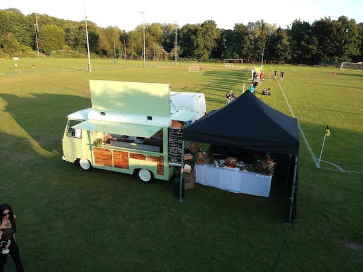

Events
"We specialize in providing tailored catering solutions for a variety of events, from elegant weddings and lively parties to dry hire services for those looking to manage their own event setup. Whether you're planning an intimate celebration or a grand affair, our team is dedicated to delivering exceptional food and service that perfectly complements your occasion. With a range of customizable options, we ensure your event is memorable and stress-free, no matter the size or style.

